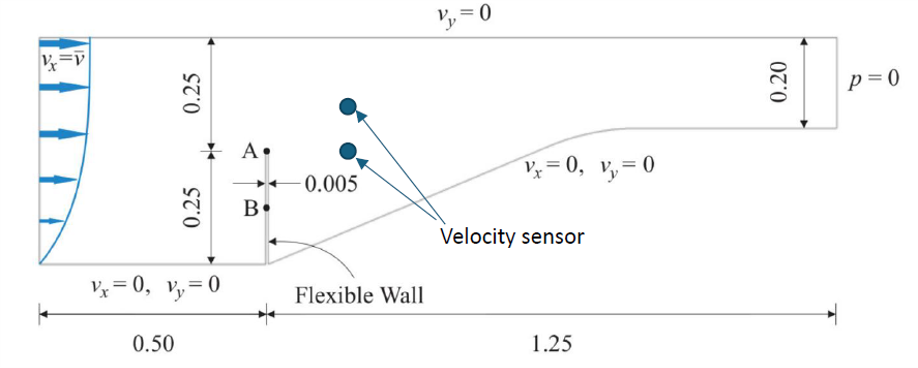
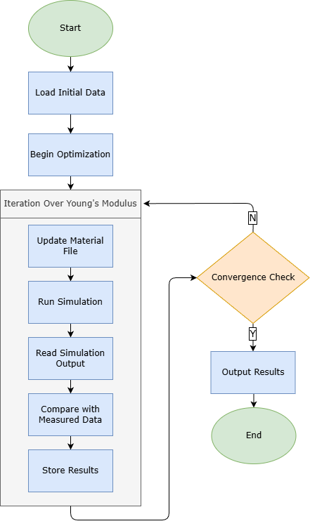
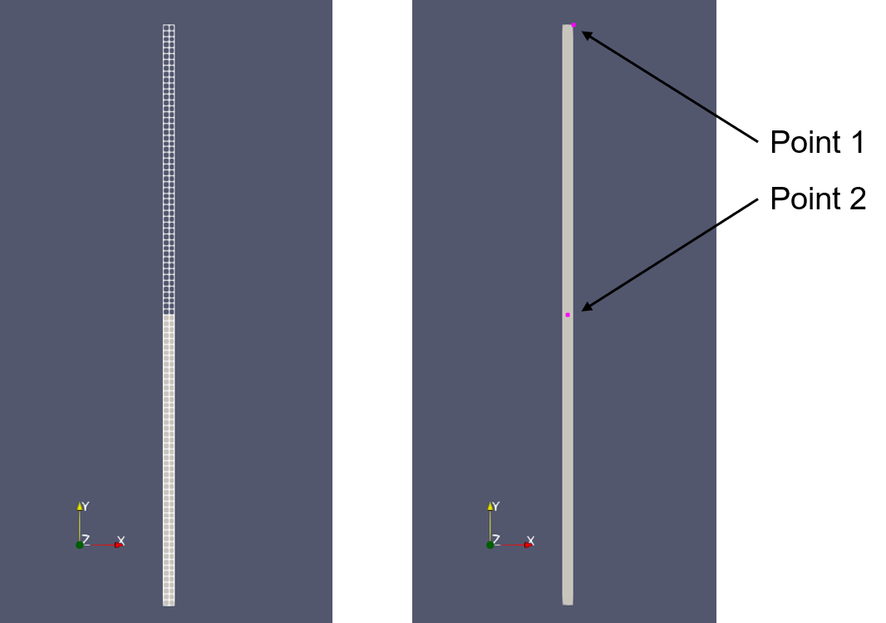
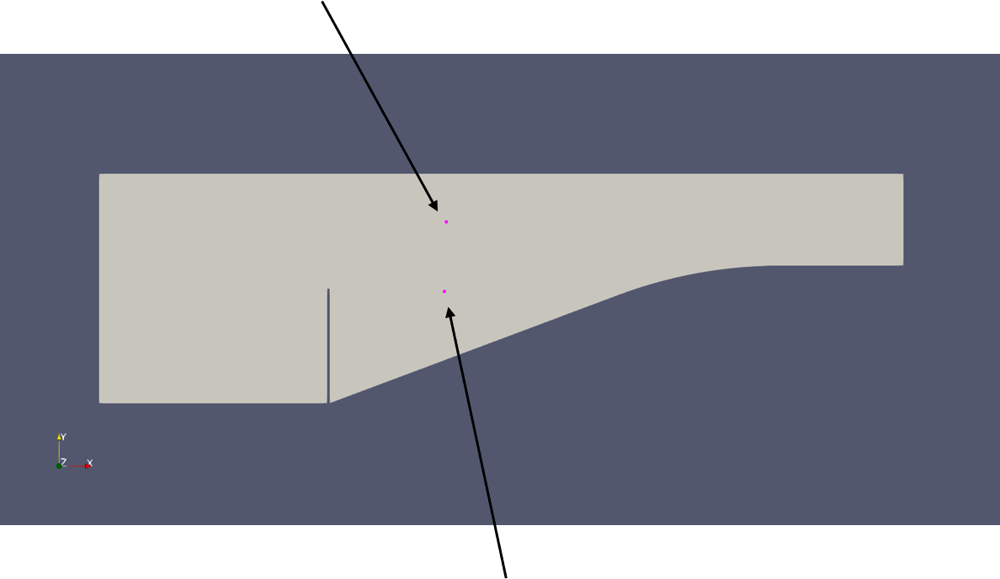
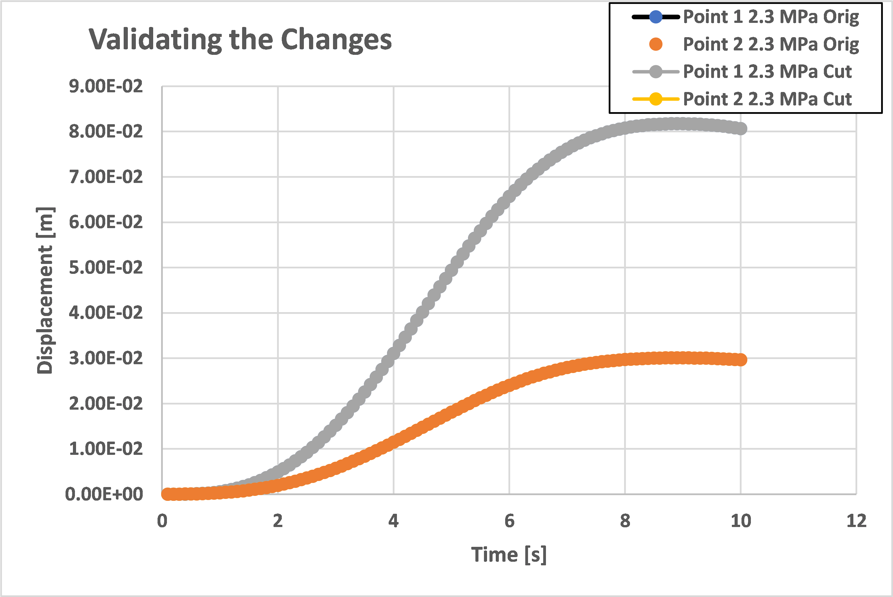
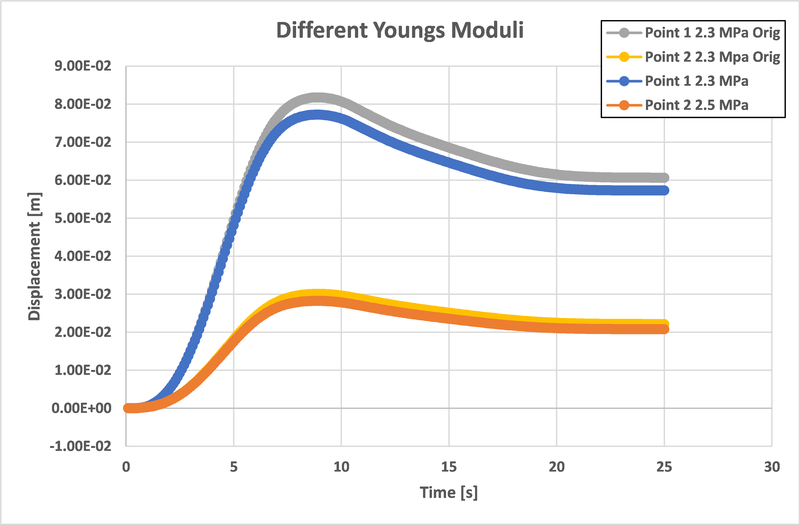
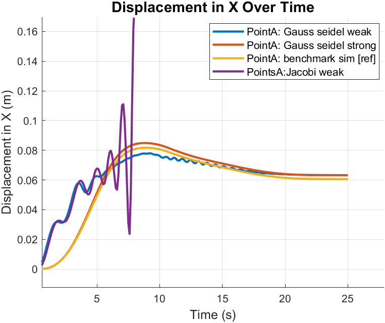
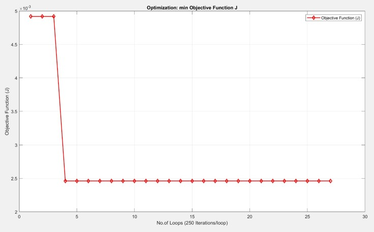
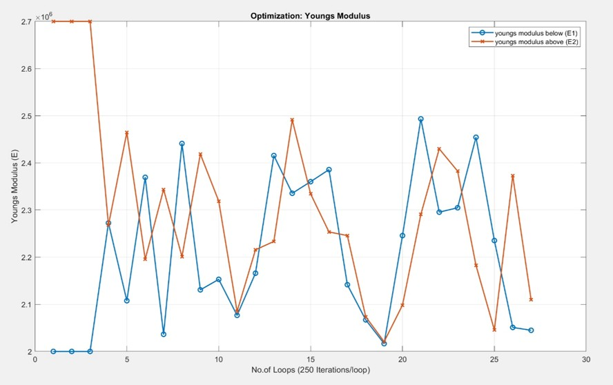
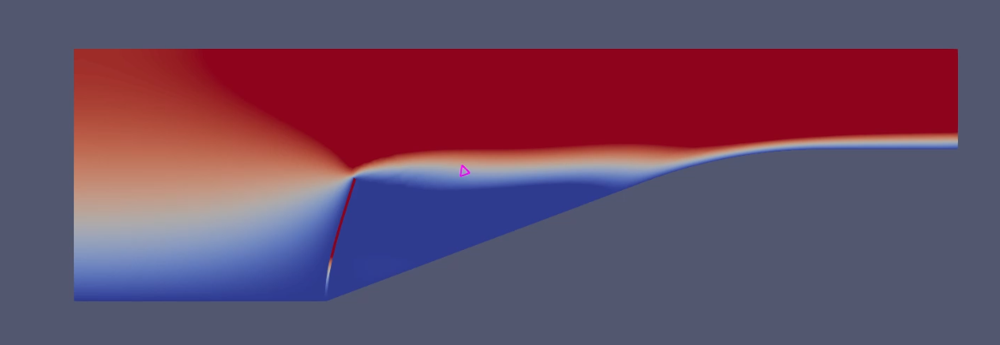

Figure: Complete Set-up of the FSI Model (Beam in Fluid Channel with Sensor Locations)
Developing Methodology for Model Fitting to be used in Fluid-Structure Coupled Problem
This Fluid Structure Interaction project develops a methodology for system identification in FSI problems by integrating digital twin concepts with numerical simulations using Kratos Multiphysics.
A simplified internal fluid flow over a slender beam in a channel is modeled, where three different Young's moduli are identified through velocity measurements and deformation sensors. An optimization process using Differential Evolution iteratively refines material parameters to minimize errors between measured and computed data, enhancing accuracy for digital twin applications.
Supervised by Dr.-Ing. Ihar Antonau at the Chair of Structural Analysis, TU München.
Project Tasks
- Understand the coupled problem
- Get the interested values from the model at the given locations
- Compute the displacement/velocities (measured in x-direction) of the two sensors with prescribed Young's moduli for E1, E2, E3
- Build a response function to compute the sensor error between statistical quantities (e.g., average) of measured and computed data from the simulation
- Develop an optimization process to identify correct material parameters
- Study the effect of different coupling methods on the system identification
Contributors
- Bhakti Sheth
- Rohin Ramisetty
Tools & Methods
- Kratos Multiphysics
- CoSimulationApplication
- Differential Evolution (DE)
- Gauss-Seidel coupling
- Python for optimization
Motivation
Fluid-Structure Interaction (FSI) governs critical real-world phenomena where fluid forces deform structures and structural changes alter flow — from blood flow in arteries and heart valves to aerodynamic loads on aircraft wings and wind-induced bridge vibrations.
Accurate prediction requires tightly coupled simulations that solve fluid and structural equations simultaneously with proper interface handling. Traditional uncoupled approaches often fail to capture these bidirectional effects, leading to inaccurate results.
This project develops a methodology for system identification in FSI using Kratos Multiphysics. By combining numerical simulation with data-driven optimization (Differential Evolution), material parameters (Young's modulus) are refined from virtual sensor data — advancing digital twin concepts for structural monitoring in aerospace, biomedical, and energy applications.
Methodology
Methodology
This study employs a computational framework for solving FSI problems using Kratos Multiphysics, integrating numerical modeling with optimization techniques for system identification. The fluid and structural domains are governed by the incompressible Navier-Stokes equations and linear elasticity theory, respectively, discretized using FEM. The coupling is achieved through a partitioned approach with Dirichlet-Neumann scheme, where the fluid solver imposes velocity constraints, and the structural solver computes reaction forces. Relaxation techniques enhance convergence and stability.
The solution process uses iterative solvers like GMRES and BiCGSTAB with preconditioners such as ILU and AMG. Parallel computing with OpenMP accelerates computations. An optimization framework adjusts Young's modulus to minimize errors between simulated and measured responses.
1. Governing Equations
- Fluid: Incompressible Navier-Stokes with VMS/SUPG stabilization
- Structure: Linear elasticity with Newmark-beta integration
2. Computational Framework
- Partitioned approach with Dirichlet-Neumann coupling
- Gauss-Seidel strong coupling for stability
- Data mapping using nearest neighbor
- Solvers: GMRES/BiCGSTAB with ILU/AMG preconditioners
- Parallel computing with OpenMP
3. Optimization Framework
- Objective: Minimize squared error between computed and measured responses
- Method: Differential Evolution (DE) for nonlinear optimization
The objective function \( J \) for optimization is defined as:
\[ J = \frac{1}{2} \sum_{t=1}^{N} \sum_{i=1}^{M} \left[ h_i^c(t) - h_i^m(t) \right]^2 \]where \( h_i^c(t) \) is the computed value and \( h_i^m(t) \) is the measured value at sensor \( i \) and time \( t \).
This methodology combines advanced coupling strategies, solver optimizations, and robust optimization techniques to ensure accurate and efficient FSI simulations.

Figure: Optimization Strategy.

Figure: Mesh and Split Details (Left) and Location of Displacement Sensors (Right).

Figure: Location of Velocity Sensors.
Benchmarking & Testing
Benchmarking validated the mesh manipulation and split implementation. The displacement vs. time response for a continuous wall without a slit serves as the baseline, exhibiting smooth deformation under loading conditions. Introducing a split alters the structural response, as discontinuities affect stiffness and load distribution.
Displacement responses for continuous and split walls overlapped perfectly, confirming no computational artifacts from the split.

Figure: Comparing Continuous and Split Wall
Stiffness variations in split halves showed expected deformation patterns, with the stiffer bottom half exhibiting less displacement, validating the implementation.

Figure: Bottom Stiffer Relative to Top
Comparison of Coupling Strategies
The behavior of different coupling strategies such as Gauss-Seidel strong, Gauss-Seidel weak, Jacobi weak, and the benchmark simulation offers critical insights into their suitability for strongly coupled FSI problems. Gauss-Seidel methods rely on sequential updates, where one domain's solution informs the other within the same iteration, allowing strong coupling to synchronize responses effectively.
Gauss-Seidel strong matched the benchmark closely with minimal deviation and faster convergence due to efficient data exchange. Gauss-Seidel weak, while stable and cheaper, converges slower without iterative dependency for nonlinear interactions. Jacobi methods use parallel updates, making them less stable; Jacobi weak showed oscillations and divergence as exchanged data may not align, unsuitable for strongly coupled systems.
These findings emphasize the importance of solver selection for capturing bidirectional interactions and achieving stable, accurate solutions.

Figure: Coupling Strategy Comparison
Optimization Results
The optimization results for the four sensors show a rapid reduction in the objective function \( J \) from \( 5 \times 10^{-3} \) to \( 2.5 \times 10^{-3} \) within the first five iterations, followed by stabilization. This indicates the DE algorithm effectively minimized the error between computed and measured data, achieving efficient convergence.

Figure: Optimization of Function J
The remaining residual error suggests challenges such as unscaled velocity contributions and constrained Young's modulus bounds limiting full refinement. The process aimed to converge \( E_1 \) and \( E_2 \) toward 2.3 MPa, but persistent oscillations occurred due to the nonlinear search space. Despite these limitations, the framework successfully refined material properties iteratively, demonstrating its effectiveness for system identification in FSI simulations.

Figure: Optimization of Young's Modulus

Figure: Velocity - During the Ramp-up
Video: Velocity Animation - During the Ramp-up

Figure: Velocity - After Settling
Video: Velocity Animation - After Settling
Limitations & Future Work
- Unscaled velocity data dominated error function in multi-sensor optimization
- Constrained Young's modulus bounds limited refinement
- Oscillations in convergence due to nonlinear, multi-modal search space
- Future: Implement data scaling for equitable error contributions
- Extend to 3D structures and complex geometries
- Incorporate adaptive meshing and advanced preconditioners
- Enhance automation for segmentation and parameter handling
The framework provides a solid foundation for advancing FSI simulations in engineering applications.
Summary
This study presents a robust and adaptive framework for FSI simulations coupled with optimization strategies, demonstrating its potential for addressing complex structural optimization challenges. Through the development and analysis of an automated beam segmentation and optimization process, the study successfully highlighted the interplay between material property distribution and structural performance within a dynamic fluid environment.
The methodology’s ability to handle both equal and unequal segmentation with optimal Young’s modulus values underscores its versatility and reliability in generating targeted design modifications. By leveraging optimization techniques, the framework minimized beam deflection efficiently while preserving the integrity of the structural simulation, providing a seamless balance between accuracy and computational feasibility.
A detailed analysis of coupling strategies revealed the significance of choosing appropriate solvers in FSI problems. The Gauss-Seidel strong coupling method emerged as the most reliable approach for ensuring accurate synchronization between fluid and structural domains, closely replicating benchmark simulations with faster convergence.
In contrast, weak coupling methods demonstrated slower convergence, with the Jacobi weak strategy exhibiting significant oscillations due to its parallel update mechanism, which is ill-suited for strongly coupled systems. These findings emphasize the importance of solver selection in capturing bidirectional interactions and achieving stable, accurate solutions.
This study concludes with a reaffirmation of the importance of solver accuracy, optimization adaptability, and computational efficiency in achieving reliable solutions for strongly coupled systems. The developed framework serves as a stepping stone toward more sophisticated methodologies, fostering further innovation in the field of FSI modeling and optimization.
Acknowledgments
Thanks to contributors Bhakti Sheth and Rohin Ramisetty, and supervisor Dr.-Ing. Ihar Antonauk at the Chair of Structural Analysis, TU München.